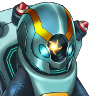
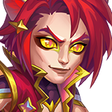

HERO OVERVIEW
Polaris — One of the Greatest Free-to-Play Heroes
Polaris is a back-line Control Hero from the Way of Progress.
She combines powerful stuns, Magic Damage and one of
the most valuable damage-amplification mechanics
available to Progress teams.
Her main advantage is not simply controlling enemies.
It is turning repeated stuns into opportunities
for significantly increased Magic Damage.
Her fourth Skill, Aurora Borealis,
rewards teams capable of repeatedly stunning
opponents who are already stunned.
This makes Polaris particularly attractive for
Free-to-Play players looking for a powerful
Control Hero who can contribute to the damage
potential of an entire composition.
Core strategy:
Build around overlapping stuns, exploit Radiance,
and combine Polaris with Heroes capable of
benefiting from the increased magical damage.
TEAM BUILDING
Polaris — Powerful Hero Synergies
Polaris benefits from Heroes capable of
creating overlapping stuns, increasing
magical damage or expanding the value
of Way of Progress compositions.

Judge — Stun & Progress Synergy
Judge is one of the most interesting
partners for Polaris.
His control mechanics provide
opportunities to stun enemies who
are already stunned, helping activate
Radiance through Aurora Borealis.
Judge also belongs to the Way of Progress,
contributing to Shooting Star's
area-of-effect increase.
Key advantage:
Additional control and a strong
Progress-based offensive foundation.

Orion — Magical Damage Amplification
Orion adds valuable magical damage
and can benefit significantly
from enemies affected by Radiance.
As a Way of Progress Hero,
Orion also contributes to
Shooting Star's increased area.
His offensive contribution
becomes particularly dangerous
when Polaris and her allies
repeatedly create overlapping stuns.
Key advantage:
Increased magical pressure against
enemies vulnerable to Radiance.

Astrid and Lucas — Additional Control
Astrid and Lucas contribute
additional battlefield interactions,
including control and obstacle mechanics.
Their Progress affiliation
also supports the increased
area of Shooting Star.
Together with Polaris,
they can help create a battlefield
where repeated control
becomes increasingly valuable.
Key advantage:
Obstacle interactions, additional
stun opportunities and Progress synergy.

Krista — Magic Defense Reduction
Krista can help reduce enemy
Magic Defense, creating better
conditions for Polaris's
Magic Damage.
This is especially useful when
Polaris repeatedly damages enemies
through Pulsing Comet and
Shooting Star.
Key advantage:
Weaker enemy magical protection.

Iris — Magical Pressure
Iris provides another option
for applying magical pressure
against enemy formations.
Reducing enemy Magic Defense
can help Polaris make better use
of her own damage-based Skills.
Key advantage:
Additional offensive pressure
against weakened enemies.

Miu — Magic Penetration Support
Miu offers another approach
to supporting magical damage
through Magic Penetration.
This can complement the
damage potential Polaris creates
while maintaining control.
Key advantage:
More effective magical pressure
against defended opponents.
Team-building principle:
Prioritize combinations capable
of creating repeated stuns and
benefiting from the increased
Magic Damage applied through Radiance.
COUNTERS & BATTLE STRATEGY
How to Counter Polaris
Polaris becomes dangerous when she
controls the enemy team repeatedly.
Preventing those stuns, punishing
control effects or disrupting
her ability to act can significantly
reduce her effectiveness.
COUNTER — STUN PROTECTION

Sebastian — Ballad of Tenacity
Sebastian is one of the clearest
answers to Polaris's stun mechanics.
Ballad of Tenacity protects allies
against stuns, interfering with
Polaris's ability to control
the battlefield.
Preventing these control effects
can also interfere with the
repeated-stun conditions
needed for Aurora Borealis.
Tactical advantage:
Reduce Polaris's ability
to establish her control cycle.
COUNTER — CONTROL PUNISHMENT

Soleil — Punishing Control
Soleil is an option against
control-heavy compositions.
Repeated control effects
can create opportunities
for Soleil to respond
and pressure the opposing team.
Tactical advantage:
Turn Polaris's dependence
on control into a potential liability.
COUNTER — ENERGY PUNISHMENT

Satori — Energy Gain Punishment
Glacial Fortress provides Polaris
with additional Energy whenever
the obstacle is attacked.
Satori can exploit certain forms
of enemy Energy gain,
making this interaction
strategically important.
Tactical advantage:
Punish the Energy acceleration
associated with Glacial Fortress
when the relevant conditions apply.
COUNTER — SILENCE

Crow — Silence & Skill Disruption
Silence can prevent Polaris
from freely activating her Skills.
Crow can help interrupt
the control cycle before
Polaris establishes repeated stuns.
Tactical advantage:
Limit her ability to execute
her control abilities.
COUNTER — ADDITIONAL SILENCE OPTIONS

Thea & Mushy and Shroom
Additional Silence Options
Thea
 Mushy & Shroom
Mushy & Shroom
Thea and Mushy and Shroom
provide further possibilities
for interrupting Polaris's
Skill activations through Silence.
Tactical advantage:
Disrupt control and damage
before the enemy team
builds momentum.
COUNTER — AOE PUNISHMENT

Corvus — Altar Pressure
Corvus can become dangerous
against Polaris when her
area damage repeatedly
interacts with his Altar.
The effectiveness of this
matchup depends on Polaris's
Health and the frequency
of her damage interactions.
Tactical advantage:
Punish repeated damage events
under the right conditions.
COUNTER — COUNTER-CONTROL

Lian & Somna — Disrupting the Rhythm
Additional Counter-Control Options
Lian
 Somna
Somna
Lian and Somna can create
their own control interactions
when Polaris affects them.
Delaying Polaris or disrupting
her attack rhythm can interfere
with the repeated stuns
her composition requires.
Tactical advantage:
Counter-control can prevent
Polaris from maintaining
continuous offensive pressure.
Counter summary:
Sebastian offers stun protection,
Soleil punishes control,
Satori can exploit Energy interactions,
Silence disrupts Skill activation,
Corvus threatens repeated area damage,
and Lian or Somna can interrupt
Polaris through counter-control.
FINAL ASSESSMENT
Final Verdict — Is Polaris Worth Building?
One of the Best Free-to-Play Investments
Polaris remains one of the most valuable
Free-to-Play Heroes available
in Hero Wars Alliance.
Her powerful control mechanics,
Magic Damage and exceptional
team synergy make her
particularly attractive for players
building Progress-focused compositions.
Her fourth Skill,
Aurora Borealis,
is the key to understanding
her full potential.
Enemies affected by Radiance receive
50% increased Magic Damage,
rising to 100%
when the damage comes from
Way of Progress Heroes.
Building around repeated stuns
allows the whole team to benefit
from this amplification.
Prioritize Magic Attack,
develop enough Health to survive,
and select allies capable
of supporting her control mechanics.
GOA recommendation:
Polaris is an outstanding investment
for Free-to-Play players,
particularly those developing
teams with repeated stuns,
Magic Damage and
Way of Progress synergies.